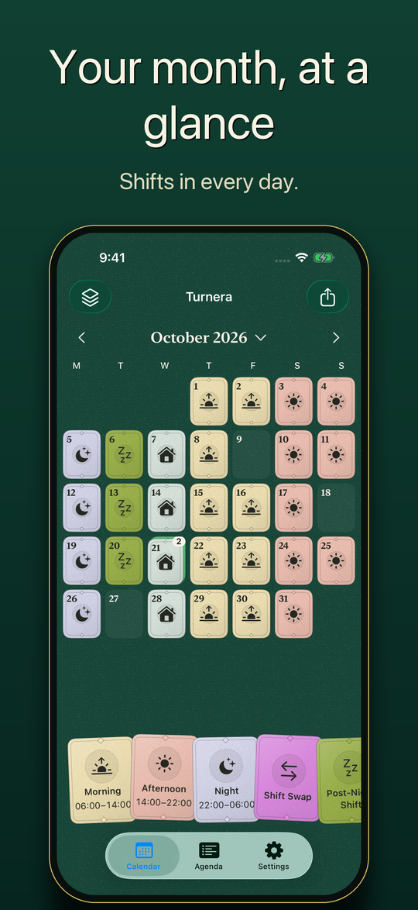
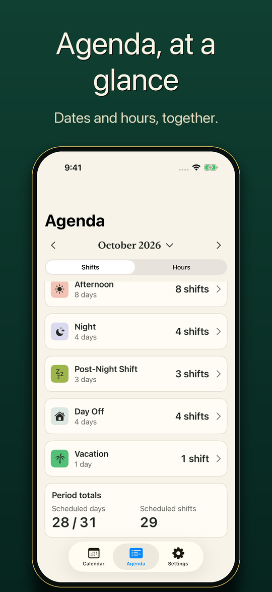
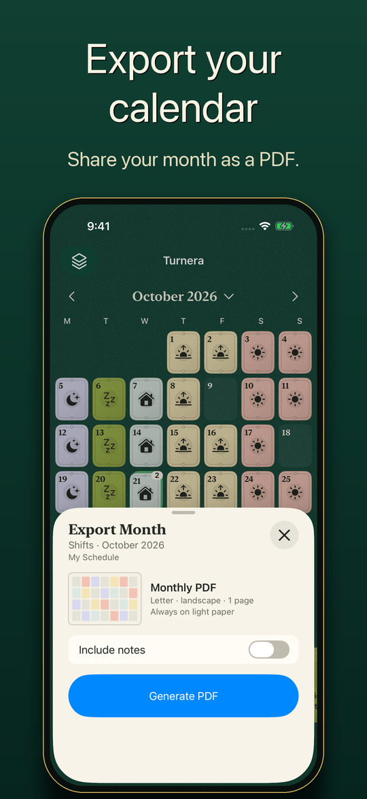

Products / Turnera
What you can do
- See your whole month of shifts at a glance in the calendar.
- Review your shifts and hours, with period totals, in the agenda.
- Export your month as a PDF to share it.
Screenshots


